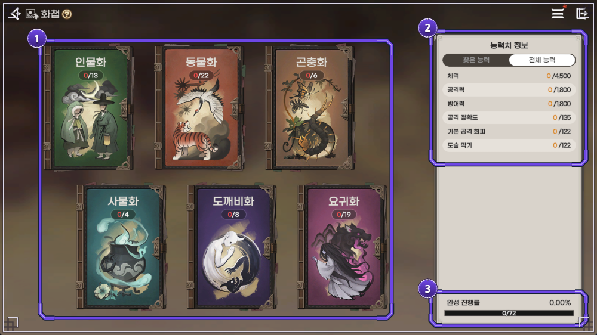
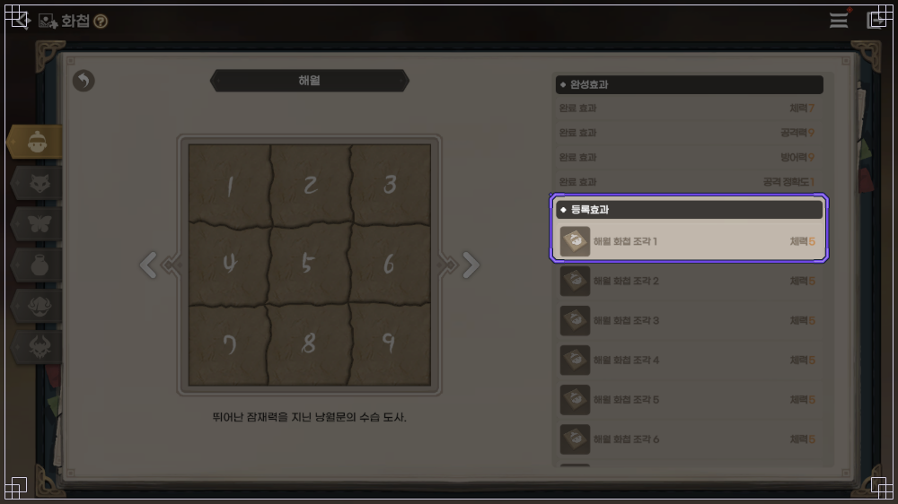
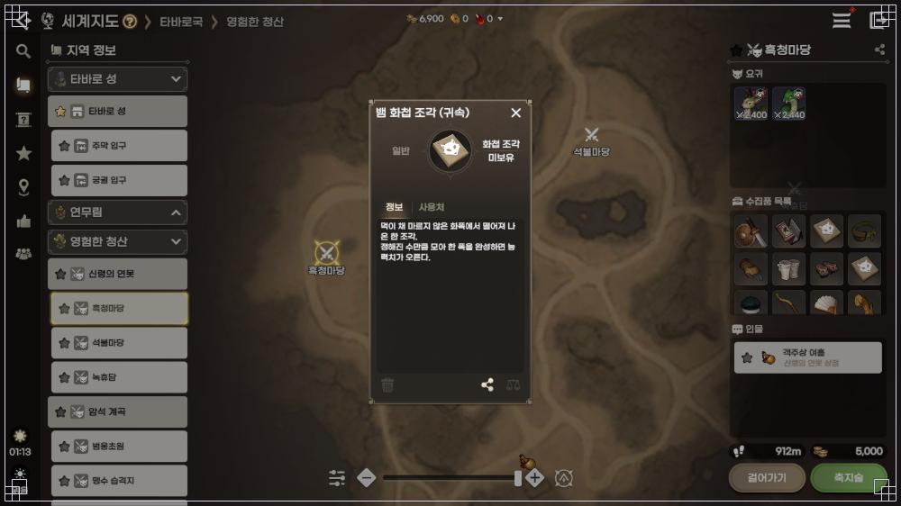
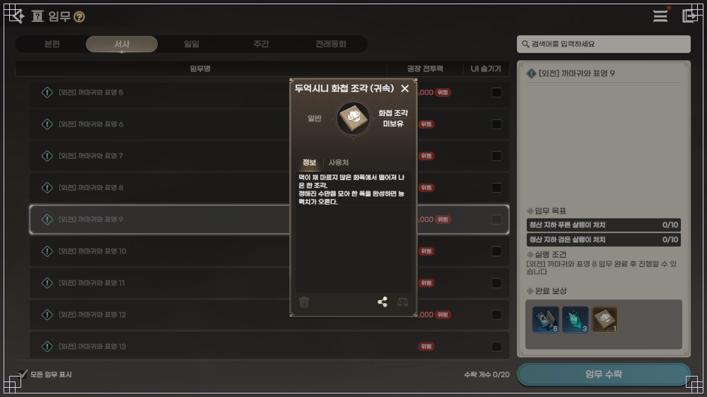
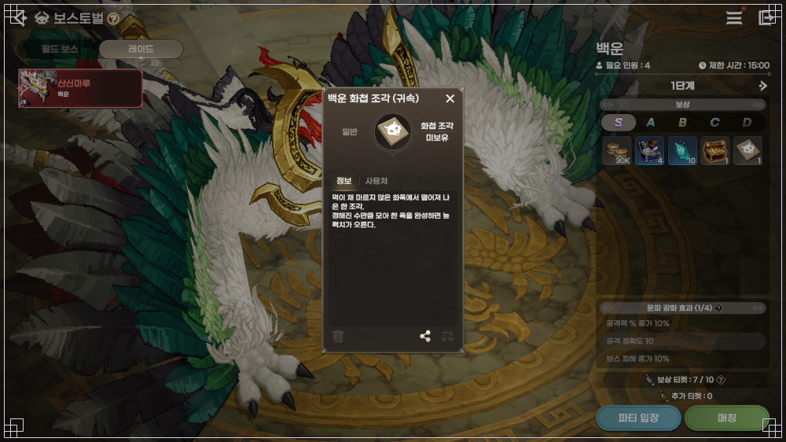
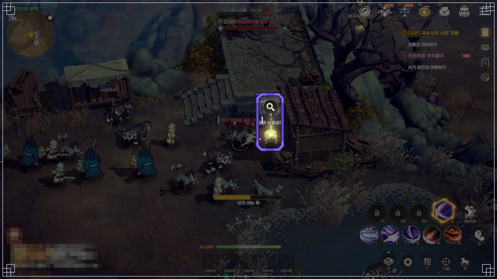
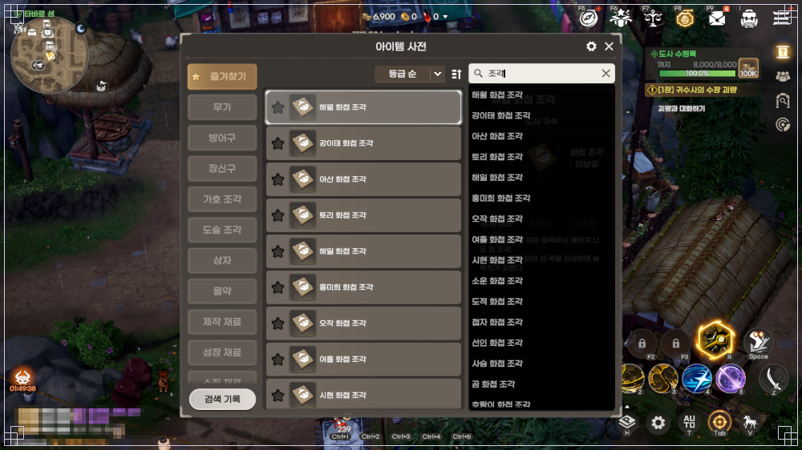

도깨비의세계 화첩 조각 얻는 법 4가지, 거래소는 안 돼요
도깨비의세계에서 화첩 조각은 거래소로 사고팔 수 없고, 공식 TIP 8085는 요귀 처치·임무 완료 보상·콘텐츠 보상·보물찾기로 얻는다고 안내해요. 어느 조각이 어디서 나오는지는 화첩 화면이나 아이템 사전의 획득처에 떠요.
화첩을 처음 열면 인물화부터 요귀화까지 여섯 권이 전부 텅 비어 있어서, 조각을 어디서 모아야 하나 막막하신 분들 많으실 텐데요. 도경에서 사는 도술 조각은 다른 재료라서, 이 글은 TIP 8085가 알려 주는 네 경로를 중심으로 정리해 봤어요. 발행일 기준 공식 안내로 정리했고, 이후 달라질 수 있어요.
화첩 조각은 어디서 얻나요? 표로 먼저 볼게요
화첩 조각은 요귀를 잡을 때, 임무를 끝낼 때, 레이드 같은 콘텐츠를 돌 때, 보물상자를 열 때 나온다고 해요. 아래 표는 공식 TIP 화면 예시에서 조각이 찍힌 장면(보물찾기만 상자를 여는 장면)과, 그 자리를 내 화면에서 찾는 길을 묶은 거예요.
| 경로 | 공식 TIP 화면 예시 | 내 화면에서 찾는 길 |
|---|---|---|
| 요귀 처치 | 흑청마당의 뱀 화첩 조각 | 세계지도 지역 정보, 아이템 사전 |
| 임무 완료 보상 | [외전] 까마귀와 표영 9의 두억시니 화첩 조각 | 임무창 서사 탭의 완료 보상 칸 |
| 콘텐츠 보상 | 레이드 백운의 백운 화첩 조각 | 보스토벌, 레이드 탭의 보상 칸 |
| 보물찾기 | 상자를 여는 장면 | 메뉴의 보물찾기, 세계지도 상자 아이콘 |
표의 예시는 장면 하나씩이라서 같은 경로에서 나오는 조각이 이것만은 아니에요.
화첩은 어디서 열고, 등록효과와 완성효과는 뭐가 다른가요?
화첩은 메인 화면의 메뉴에서 화첩 아이콘을 눌러 열고, 인물화·동물화·곤충화·사물화·도깨비화·요귀화 여섯 분류로 나뉘어 있어요. 아직 아무것도 등록하지 않은 공식 가이드 화면 기준 숫자는 아래와 같아요.
- 인물화 0/13 · 동물화 0/22
- 곤충화 0/6 · 사물화 0/4
- 도깨비화 0/8 · 요귀화 0/19
- 완성 진행률 0/72

아무것도 등록하기 전의 화첩 화면이에요. 여섯 분류가 모두 0으로 시작하고, 오른쪽 아래 완성 진행률이 0/72로 나와요. 테스트 환경에서 만든 화면이라 숫자는 바뀔 수 있어요.
등록효과는 조각을 하나 등록할 때마다 붙는 능력치이고, 완성효과는 그 화첩의 조각을 전부 등록해 한 폭을 끝냈을 때 더해지는 능력치예요. 화첩마다 필요한 조각 수가 달라서, 인물화만 봐도 해월은 9조각인데 강이태는 4조각이죠.

해월 화첩을 열어 둔 화면인데요, 완성효과로 체력 7·공격력 9·방어력 9·공격 정확도 1이 붙고, 보라 테두리 아래 등록효과는 조각 1~6번이 각각 체력 5로 보여요.
이미지: 카카오게임즈 공식 포럼 TIP 8085 화첩 집중 탐구
화첩 조각을 모으는 네 가지 방법은 뭔가요?
경로마다 어떤 화면에서 조각이 보이는지 차례로 볼게요. 아래 그림은 모두 공식 TIP 화면 예시예요.
① 요귀 처치는 요귀 구역을 사냥하다가 그 지역 요귀의 화첩 조각이 나오는 방식이에요. 세계지도의 지역 정보에서 타바로국 영험한 청산, 신령의 연못, 흑청마당 순서로 들어가면 뱀 화첩 조각 아이템 팝업이 열려 있고, 지도 오른쪽에는 그 장소의 요귀 아이콘 두 종류와 수집품 목록이 같이 보여요. 설명 문구는 정해진 수만큼 조각을 채워 한 폭을 끝내면 능력치가 오른다는 내용이에요.

흑청마당을 고른 세계지도에서 뱀 화첩 조각 팝업이 열려 있는 장면이에요.
이미지: 카카오게임즈 공식 포럼 TIP 8085 화첩 집중 탐구
② 임무 완료 보상은 임무를 끝내고 받는 보상 칸에 화첩 조각이 들어 있는 방식이에요. 임무창 서사 탭의 [외전] 까마귀와 표영 9는 완료 보상 세 칸 가운데 하나가 두억시니 화첩 조각이고, 이 임무는 [외전] 까마귀와 표영 8을 끝낸 뒤에 진행할 수 있어요.

임무창 서사 탭에서 오른쪽 아래 완료 보상 칸 세 개 중 마지막이 두억시니 화첩 조각이에요.
이미지: 카카오게임즈 공식 포럼 TIP 8085 화첩 집중 탐구
③ 콘텐츠 보상은 보스토벌 같은 콘텐츠를 돌고 받는 보상이에요. 보스토벌의 레이드 탭에서 백운을 열면 화면에는 필요 인원 4, 제한 시간 15:00, 1단계로 나오는데요, S등급 보상 칸에 화첩 조각이 한 개 있고 눌러 보면 백운 화첩 조각이에요. 공식 보스토벌 가이드(7946)의 백운 주요 보상 목록에도 같은 조각이 글자로 올라 있거든요.

백운 레이드 화면에서 S등급 보상 맨 오른쪽 칸이 화첩 조각이죠.
이미지: 카카오게임즈 공식 포럼 TIP 8085 화첩 집중 탐구
④ 보물찾기는 메뉴의 보물찾기에서 지역마다 숨은 보물상자를 직접 찾아 여는 방식이에요. 상자에서는 가호 주머니·요혼석·장비 강화 비법서·엽전과 함께 화첩 조각이 나오는데요, 가까이 가면 세계지도에 상자 아이콘이 뜨며 돋보기 아이콘을 눌러 열어요. 장소별 상자를 전부 찾으면 100% 달성 보상도 받아요.

조각이 찍힌 컷은 아니고, 산신의 영역에서 보물상자를 여는 장면이에요.
이미지: 카카오게임즈 공식 포럼 TIP 8085 화첩 집중 탐구
공식 안내에 개별 표나 수치가 따로 나와 있지 않아요. 조각을 눌러 열리는 획득처 팝업과 아이템 사전에서 직접 볼 수 있습니다.
화첩 조각은 거래소에서 사거나 팔 수 있나요?
거래소에서는 화첩 조각을 사지도 팔지도 못해요. 위 세 팝업에도 조각 이름 옆에 귀속 표기가 붙어 있고요. '보상으로만 얻는다'는 말은 공식 TIP 8085 기준이라, 헷갈리기 쉬운 세 가지를 따로 짚어 볼게요.
- 유물은 거래가 돼요. 출시 전 라이브 시연회 Q&A(공지 1132)는 모자란 유물은 거래소에서 사고 남는 유물은 팔라고 안내했어요.
- 금옥은 타바로 성 잡화 금전 상점인데요, TIP 8085는 화첩 조각을 보상으로만 얻는다고 하지만 상인회 가이드 7988에는 금옥에서 일부 화첩 조각 꾸러미를 살 수 있다고 적혀 있어서 두 공식 글의 표현이 서로 달라요. 이 글에서는 어느 쪽도 단정하지 않을게요.
- 도술 조각은 도경에서 사는 다른 재료라서 이 글의 화첩 조각과는 별개예요.
어디서 나오는지 모르겠을 때는 어떻게 확인하나요?
조각 이름을 눌러 획득처를 보거나 아이템 사전에서 조각을 검색하면 어느 경로로 얻는지 확인할 수 있어요. 화첩에서는 이 순서예요.
- 메뉴에서 화첩을 열어 분류와 화첩을 골라요.
- 오른쪽 '등록 효과' 목록으로 가요.
- 필요한 화첩 조각을 눌러요.
- 열린 팝업의 획득처를 봐요.
제 화첩에서 조각을 눌렀더니 획득처에 〔요귀 이름 / 임무 이름 / 콘텐츠 이름〕이 떠 있었어요.
사전으로 찾는다면 메뉴(三)에서 아이템 사전을 열고 분류 탭의 화첩 조각을 고르거나 검색창에 조각을 치면 되는데요, 사전에는 화첩 조각과 유물을 어느 요귀에게서 얻는지도 적혀 있어서 요귀 처치 경로를 알아볼 때 좋아요.

아이템 사전 검색창에 조각을 치면 해월·강이태·아산·토리 같은 이름의 화첩 조각이 줄지어 떠요.
이미지: 카카오게임즈 공식 포럼 TIP 8085 화첩 집중 탐구
이럴 땐 이렇게
· 필요한 조각 이름을 아신다면 화첩에서 바로 누르시는 게 제일 빨라요. 보던 화면에서 획득처까지 이어지거든요.
· 이름이 가물가물하면 사전 검색창에 '조각'을 쳐서 목록을 훑어보면 되죠. 이름을 몰라도 고를 수 있어요.
· 어느 요귀를 잡아야 할지 모르겠다면 사전의 조각 항목이 답이에요. 사냥할 요귀가 같이 적혀 있거든요.
모은 조각은 어떻게 등록하나요?
등록할 조각이 생기면 화첩에 [등록가능] 표시가 뜨는데요, [모두 등록]을 누르면 가진 조각이 한꺼번에 등록돼요. 메뉴(三)에도 등록할 수 있는 조각이나 유물이 있으면 붉은 점이 떠서, 사냥하다가 놓칠 일은 많지 않거든요. 요혼석은 화첩을 완성할 때 쓰는 재화인데, 얼마나 드는지는 공식 안내에 나와 있지 않아요.
도깨비의세계 화첩 조각 자주 묻는 질문
Q. 화첩이 메뉴에 안 보여요.
입문 임무 [길잡이] 화첩을 끝내면 열려요. 메인 화면 메뉴에 화첩 아이콘이 나타나면 열린 거예요.
Q. 요혼석은 보물찾기에서도 나오나요?
네, 보물찾기 상자 보상 중에 요혼석이 있어요. 화첩 완성에 쓰는 재화라서 조각과 같이 모이는 셈이에요.
Q. 그림 속 숫자가 지금 서버와 똑같나요?
가이드 7915 화면은 테스트 환경에서 만들었고, TIP 8085도 업데이트에 따라 게임 내용과 다를 수 있다고 안내해요. 숫자는 공식 화면 예시일 뿐이라 달라질 수 있어요.
도깨비의세계 화첩 조각 얻는 법 정리
저라면 사냥하다 [등록가능]이 뜰 때마다 [모두 등록]으로 챙겨 두고, 끝내 안 모이는 조각 하나만 획득처 팝업으로 따라가겠어요. 그쪽이 덜 헤맬 것 같네요. 즐겁게 화첩 채우시길 바랄게요.
✔ 도깨비의세계 같이 보기 좋은 내용
· 도깨비의세계 도술 조합 추천 사냥·PvP 인기 빌드 4유형, 10월 21일 도술 초기화 전 10월 19일 기준
· MMORPG신작 도깨비의세계 전투력 올리는 방법과 자동사냥 효율 세팅, 오프라인 모드 켜는 법까지 꿀팁 정리
· 도깨비의세계 엽전 이벤트 정리, 출석·성장 지원·패스·단 봉인 해제·요귀 봉인 5종 최대 합계 5,150,000개와 마감일 한눈에
참고한 곳
· 도사님의 성장 발판, 화첩 집중 탐구 TIP(8085)
· 화첩 게임 가이드(7915)
· 상인회 게임 가이드(7988)
· 보스토벌 게임 가이드(7946)
· 보물찾기 게임 가이드(7930)
· 아이템 사전 게임 가이드(7907)
· 해월이와 함께하는 도청년 도전! TIP(14486)
· 도깨비의세계 라이브 시연회 QnA 종합 안내(공지 1132, 출시 전 Q&A)